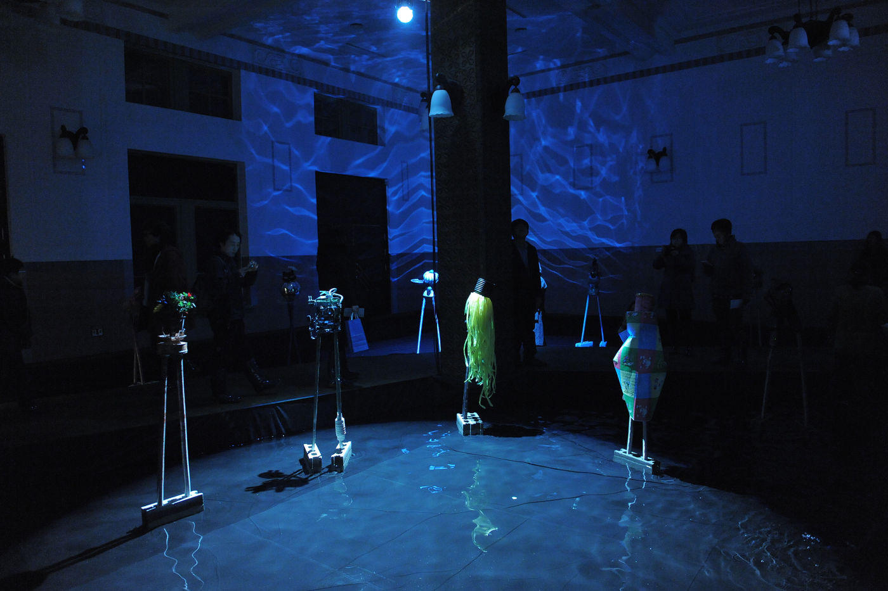
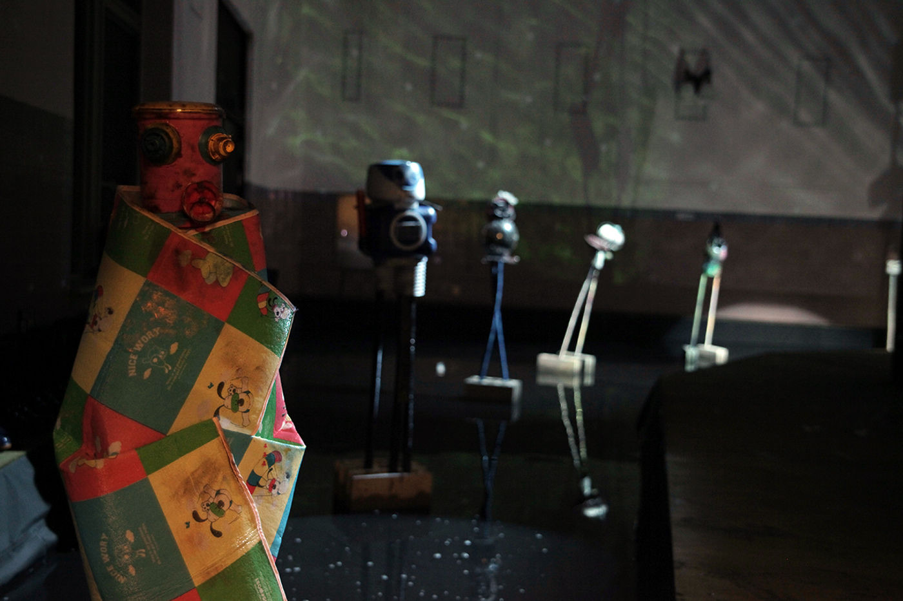
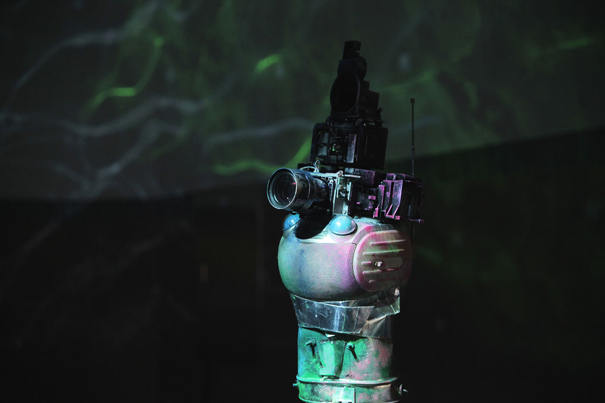
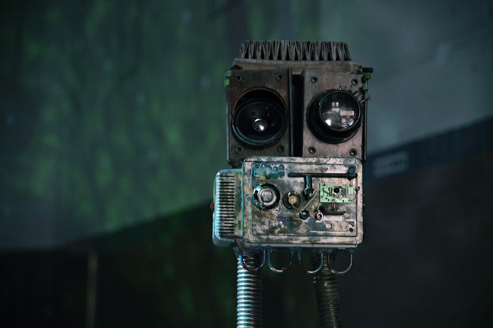

Installation — 2014
Space of Memory
옛 서울역 공간에 물을 들이고, 물 위에 반사되는 빛·이미지·소리·움직임으로 공간의 기억을 좇는 설치.
An installation that fills the space of the old Seoul Station with water, seeking the memory of space through light, image, sound, and movement reflected upon it.
옛 서울역 공간에 물을 들이고, 물 위에 반사되는 빛과 이미지, 소리, 움직임, 그리고 버려진 도구들을 통해 공간의 기억을 좇는 작업입니다. 옛 서울역은 과거 한국에 매우 상징적인 장소였지만, 지금은 그 모든 기억이 지워졌습니다. 과거의 기억과 오늘이 충돌하는 작업입니다.
This work places water in the space of the old Seoul Station, seeking the memory of space through light reflected upon the water, image, sound, movement, and discarded implements. The old Seoul Station was a deeply symbolic place for Korea in the past, but all its memory has now been erased — a work where the memory of the past collides with today.
- 작품
- Work
- Heterotopia (water, light, junk objects)
- 함께 보기
- Related
- Heterotopia — performance, 2014
Culture Station Seoul 284, Seoul — 2014


